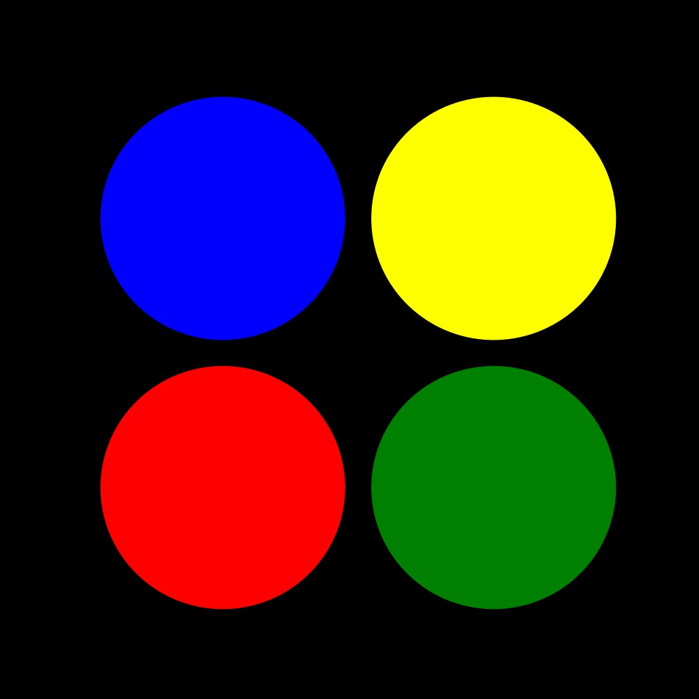
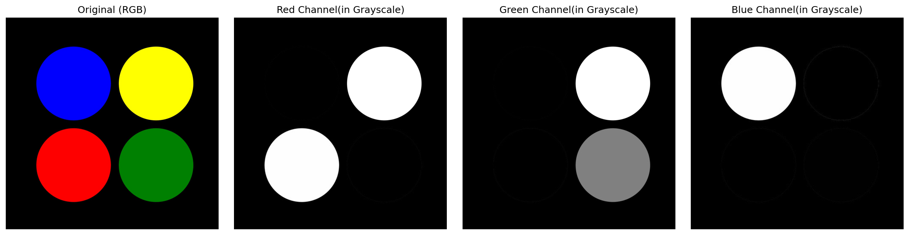
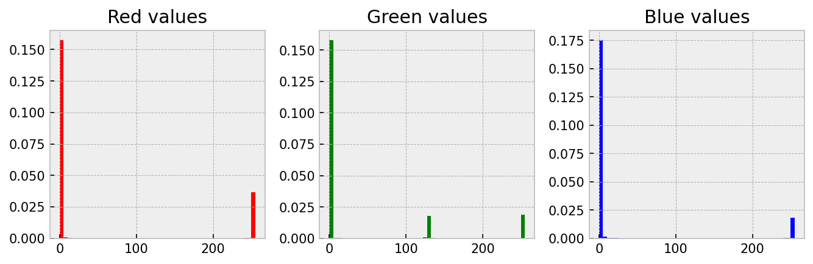
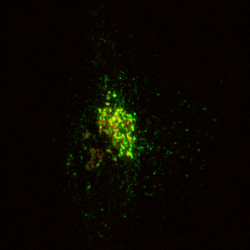
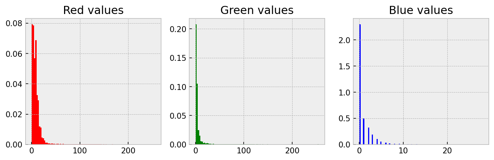
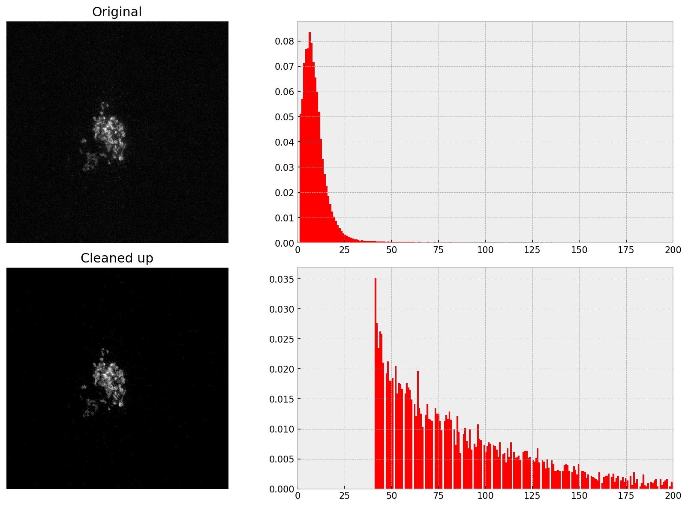

{kind=link}
print(f'{type(img)=}', f'{img.shape=}')type(img)=<class 'numpy.ndarray'> img.shape=(1000, 1000, 3)
From microscopy to astronomy, imaging is an essential tool in scientific research. Analysing and processing images is a field in its own right. There is a mind-boggling variety of techniques (from simply analysing an array to sophisticated machine learning) to process and extract information from images. In this chapter, I will show you how an image stores data and how we can extract that information. The next chapter will deal with the technique of image segmentation.
Consider the following example where I read the image four-circles.jpg and plot it using Matplotlib.
img = plt.imread('four-circles.jpg')
plt.imshow(img)
plt.axis('off')
plt.show()
What I am really interested in right now is how this image is stored in the variable img
print(f'{type(img)=}', f'{img.shape=}')type(img)=<class 'numpy.ndarray'> img.shape=(1000, 1000, 3)So Matplotlib stores this image information as a \(1000 \times 1000 \times 3\), (multi-dimensional) NumPy array! I.e., the image comprises \(3\) stacked \(1000 \times 1000\) NumPy arrays. These stacks contain information about the RGB (red, green, blue) channels that make up the image.
We can check this by visualizing the ‘layers’ or ‘channels’ separately. I will do this in a bit. But first, we need to check one more thing.
Let’s see what data type has been used to store this image information. For this, I will look at the type of a single element (say the first one):
print(f'{type(img[0,0,0])=}')type(img[0,0,0])=<class 'numpy.uint8'>So, the values are stored as the uint8 type. I.e., as a 8-bit, unsigned integer. This means that uint8 can only accommodate unsigned (positive only) numbers from \(0\) to \(2^8-1 = 255\). So, this can be used to describe 256 distinct levels.
I will plot the RBG layers (channels) separately to better understand how the image information is stored.

fig, ax = plt.subplots(nrows=1, ncols=4, figsize=(16, 4))
ax_original, ax_red, ax_green, ax_blue = ax
ax_original.imshow(img)
ax_original.set_title('Original (RGB)')
# ALL row & ALL columns of layer 0
ax_red.imshow(img[:, :, 0], cmap='gray')
ax_red.set_title('Red Channel(in Grayscale)')
# ALL row & ALL columns of layer 1
ax_green.imshow(img[:, :, 1], cmap='gray')
ax_green.set_title('Green Channel(in Grayscale)')
# ALL row & ALL columns of layer 2
ax_blue.imshow(img[:, :, 2], cmap='gray')
ax_blue.set_title('Blue Channel(in Grayscale)')Notice:
Quantitative work with images is based on the understanding that the amount and intensity of a colour has can be related to something real like the amount of a protein. One good way to understand this idea is to create a histogram of the three channels. This is straightforward; we just need to convert the 2D array of numbers into a 1D array by using np.flatten(). Let me demonstrate on four-circles.jpg.

plt.style.use('bmh')
# Convert the 2D array to a long 1D list using 'flatten'
r_data = img[:, :, 0].flatten()
g_data = img[:, :, 1].flatten()
b_data = img[:, :, 2].flatten()
fig, ax = plt.subplots(nrows=1, ncols=3, figsize=(9, 3))
ax_red, ax_green, ax_blue = ax
ax_red.hist(r_data, color='red', bins=50, density=True)
ax_red.set_title('Red values')
ax_green.hist(g_data, color='green', bins=50, density=True)
ax_green.set_title('Green values')
ax_blue.hist(b_data, color='blue', bins=50, density=True)
ax_blue.set_title('Blue values')Notice
Since image data is stored in arrays, we must first be comfortable manipulating arrays and lists to extract information from images comfortably. So, let’s practice some array ‘gymnastics’ before sinking our teeth into some real images. So, in this section, I will work through a set of example array manipulations to demonstrate how we can use masking to change and extract information from an array. This is relevant because we will use this when extracting information from an image!
Here is what I am going to do:
uint8, NumPy array of shape \(3 \times 5 \times 5\) and fill it up as shown below.-------------------- Layer 0 ---------------------
00 00 00 00 00
01 01 01 01 01
02 02 02 02 02
03 03 03 03 03
04 04 04 04 04
-------------------- Layer 1 ---------------------
00 00 00 00 00
02 02 02 02 02
04 04 04 04 04
06 06 06 06 06
08 08 08 08 08
-------------------- Layer 2 ---------------------
00 00 00 00 00
04 04 04 04 04
08 08 08 08 08
12 12 12 12 12
16 16 16 16 16 n = 5
my_array = np.zeros((3, n, n), dtype='uint8')
for layer in range(3):
for i in range(n):
my_array[layer, i, :] = 2**layer*i
# 1. Replace all values $\leq 2$ with $0$ in all the layers.
mask = my_array <= 2
my_array[mask] = 0
# 2. Replace all values $\geq 12$ with $16$ in all the layers.
mask = my_array >= 12
my_array[mask] = 16
# 3. Replace all values of layer $1$ to $0$.
my_array[1, :, :] = 0
# 4. Replace all non-zero values of **only** layer $0$ with $4$.
mask = my_array[0, :, :] != 0
my_array[0, mask] = 4
# 5. Replace all values $\geq 16$ of **only** layer $2$ with $8$.
mask = my_array[2, :, :] >= 16
my_array[2, mask] = 8
# 6. Multiply layer $0$ with layer $2$ and make it equal to layer $1$.
my_array[1] = my_array[0, :, :]*my_array[2, :, :]
# 7. Identify the locations where there is overlap between layer $0$
# and layer $1$. (i.e. where both are non-zero). Make all these values equal $3$.
mask = (my_array[0] != 0) & (my_array[1] != 0)
my_array[0, mask] = 3
my_array[1, mask] = 3Your head should be spinning now, and you must wonder how this is all relevant. Let me show you…

In this section, I will show you how to extract information from a real image. Specifically, we will quantify the amount of cargo protein (stained in green using GPF-TNF) in the Golgi area of a cell (stained in red using mCherry-ManII). This image was captured by Dr. Robert Lieu, and he has kindly given permission for me to use it here.
The image we will be playing with (golgi.jpg) is shown above.
In images like this, colour has a quantitative meaning. They directly relate to the protein that has been stained. More colour (say green) means there is more of that protein. One good way to ‘see’ this is to create a histogram of the three channels.

plt.style.use('bmh')
img = plt.imread('golgi.jpg')
r_data = img[:, :, 0].flatten()
g_data = img[:, :, 1].flatten()
b_data = img[:, :, 2].flatten()
fig, ax = plt.subplots(nrows=1, ncols=3, figsize=(9, 3))
ax_red, ax_green, ax_blue = ax
ax_red.hist(r_data, color='red', bins=100, density=True)
ax_red.set_title('Red values')
ax_green.hist(g_data, color='green', bins=100, density=True)
ax_green.set_title('Green values')
ax_blue.hist(b_data, color='blue', bins=100, density=True)
ax_blue.set_title('Blue values')Notice
Take a look at the above image (background.tif). Although it looks black, is it really full of zeros? Let’s take a look at the image data.
img = plt.imread('background.tif')
print(f'{img.shape=}',
f'{img.min()=}',
f'{img.max()=}',
f'{img.mean()=}',
f'{img.sum()=}',
sep='\n')img.shape=(512, 512, 3)
img.min()=0
img.max()=28
img.mean()=4.996832529703776
img.sum()=3929669So, there are non-zero yet small values. These small values are called noise and are randomly generated due to camera thermal processes. In image processing, it is good to remove/correct noise before doing any quantitative work. This is especially relevant when your signal is weak. I.e., when your signal-to-noise ratio is poor.
To correct for noise, you need to decide on a threshold value; signals below this will be considered as noise. There are algorithms to calculate this threshold, but trial and error also works. We have to be careful not to delete too much, or else our signal also gets deleted. This is the reason why measurements should have a good signal-to-noise ratio.
I am going to pick a threshold of 25 to ‘remove noise’
threshold = 20
img_no_noise = img.copy()
img_no_noise[img_no_noise < threshold] = 0
print(f'{img_no_noise.shape=}',
f'{img_no_noise.min()=}',
f'{img_no_noise.max()=}',
f'{img_no_noise.mean()=}',
f'{img_no_noise.sum()=}',
sep='\n')img_no_noise.shape=(512, 512, 3)
img_no_noise.min()=0
img_no_noise.max()=28
img_no_noise.mean()=0.027776082356770832
img_no_noise.sum()=21844Notice how the mean and sum are now much smaller.
golgi.jpgNow let me remove noise from golgi.jpg. Since the zeros are not very useful information, in this round, I will remove them before producing the histogram.

# | echo: true
# | eval: false
# | file: __cleaned_scripts/golgi_single-frame_matplotlib_remove-noise.py{kind=link}